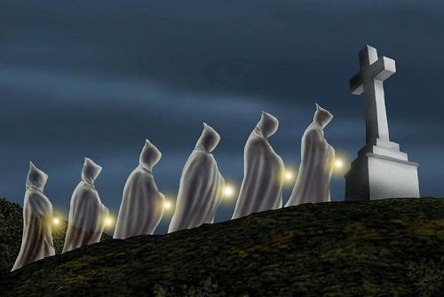

En la mitología popular de Galicia, hay relatos que hablan de la Santa Compaña, es una procesión de fantasmas o muertos que a partir de las 12 de la madrugada recorren los caminos solitarios y los cementerios presagiando la muerte. La leyenda de la Santa Compaña arranca en el año 1800 y está vinculado a la Galicia rural donde las historias de brujas, muertos y demonios están muy presentes. La aparición de la Santa Compaña está asociada a un presagio de muerte bien para reclamar el alma de alguien que va a morir o para anunciar la muerte de algún conocido.
La Santa Compaña aparece encabezada por una persona viva, un mortal que en sus manos lleva desde una cruz, pasando por un caldero con agua según algunos testigos. Junto a éste, le siguen varios encapuchados en una perfecta fila que queda acompañada por cánticos y rezos. Portando una vela, así como una pequeña campanilla, la Santa Compaña empezará la marcha en plena noche, levantando a su paso una densa niebla y viento.
La Santa Compaña se presenta para: Para reclamar el alma de alguien que morirá pronto en el plazo de un año. Para reprochar a los vivos los errores cometidos. Para anunciar la muerte de un conocido del que presencia la procesión. Para cumplir una pena impuesta por alguna autoridad del más allá.
La playa de A Lanzada fue, durante mucho tiempo, la referencia gallega para que las mujeres estériles lograsen quedarse embarazadas.
En la Ermita de Nuestra Señora de la Lanzada, existe una leyenda que va asociada no sólo a la ermita sino en general a la playa de A Lanzada que se relaciona con los ritos de fecundidad, una playa profundamente vinculada al misticismo que se atribuye a los gallegos.
Cuenta la tradición que tomar un baño de nueve olas durante una noche de luna llena constituye el fin de la infertilidad. Dos noches son las que según la tradición se puede hacer el ritual, una es la noche de San Juan y otra el último sábado de Agosto.
Las mujeres que deseaban tener un hijo y no lo lograban, fuese por la razón que fuese, se introducían en el agua y dejaban que sus olas pasasen nueve veces por encima de su vientre. La leyenda dice que “el poder benéfico de las ondas del mar provocaría que el deseo de las demandantes se cumpliese” y tuviesen ese hijo por el que se habían sometido al poder del Atlántico.
En la actualidad, en el último fin de semana de agosto se celebra la romería de la Virgen de A Lanzada
Derechos de Autor
Luis Ramallo Vidal
Última actualización: 22/10/2022. 19:18